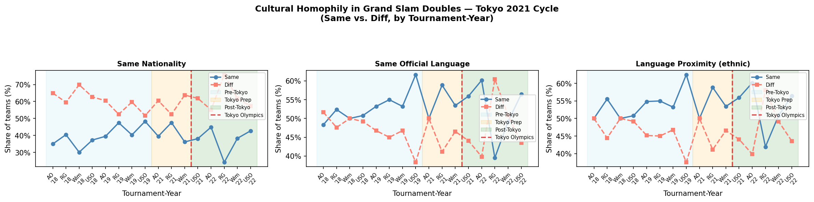
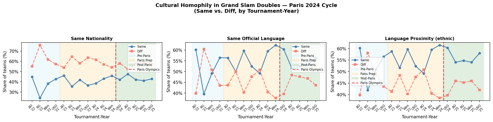

ATP Men's Grand Slam Doubles, 2018–2025 · N = 1,793 matches after dropping 47 retirements / walkovers · Team-level panel: 3,586 obs (2 per match)
Three culture measures capture teammate similarity. Same nationality and same official language are binary (0/1). Language proximity is a continuous 0–1 index of ethnolinguistic closeness (higher = more similar language family). All descriptive figures show the share of teams (pooled across winners and losers) that are same vs. different on each dimension.
Regressions use a team-level panel with tournament-by-year fixed effects, round fixed effects, and standard errors clustered by match. Controls: team average doubles ranking, opponent average ranking, teammate rank gap, top-100 singles indicator (either player). Culture measures enter one at a time.
| Outcome | N | Share of matches |
|---|---|---|
| Set-1 tiebreak (7-pt) | 445 | 24.8% |
| Set-2 tiebreak (7-pt) | 470 | 26.2% |
| Any regular tiebreak (sets 1–2) | 804 | 44.8% |
| Match tiebreak / super-tb (10-pt, set 3) | 24 | 1.3% |
| Any tiebreak (all types) | 896 | 50.0% |
| Match went to 3 sets | 787 | 43.9% |
| Comeback wins (winner lost set 1) | 351 | 19.6% |
Match tiebreaks concentrated in Olympics (N=20) and Wimbledon post-2018 (N=4).
| Period | GS window | N teams | Same Nat. | Diff Nat. | Same Lang. | Diff Lang. | Same Ling. Prox. | Diff Ling. Prox. |
|---|---|---|---|---|---|---|---|---|
| Pre-Tokyo | AO18 – USO19 | 1,006 | 39.6% | 60.4% | 53.0% | 47.0% | 53.9% | 46.1% |
| Tokyo Prep | AO20 – Wim21 (ex Wim20) | 364 | 41.2% | 58.8% | 54.1% | 45.9% | 54.1% | 45.9% |
| Post-Tokyo | USO21 – USO22 | 604 | 37.6% | 62.4% | 52.2% | 47.8% | 53.0% | 47.0% |
N teams = matches × 2. Same/Diff = share of all teams (pooled winner + loser) on each cultural dimension.
| Period | GS window | N teams | Same Nat. | Diff Nat. | Same Lang. | Diff Lang. | Same Ling. Prox. | Diff Ling. Prox. |
|---|---|---|---|---|---|---|---|---|
| Pre-Paris | AO22 – USO22 | 486 | 37.4% | 62.6% | 51.2% | 48.8% | 52.3% | 47.7% |
| Paris Prep | AO23 – Wim24 | 860 | 41.0% | 59.0% | 55.6% | 44.4% | 56.0% | 44.0% |
| Post-Paris | USO24 – USO25 | 626 | 43.1% | 56.9% | 54.8% | 45.2% | 56.2% | 43.8% |
N teams = matches × 2. Same/Diff = share of all teams (pooled winner + loser) on each cultural dimension.


Logit coefficients (log-odds). Each column is a separate model. Standard errors in parentheses, clustered by match. Fixed effects: tournament × year and round (stage code). Sample: Grand Slams only.
| Variable | (1) Same Nationality | (2) Same Language | (3) Lang. Proximity |
|---|---|---|---|
| Culture measure | +0.1093 | +0.1710** | +0.1549** |
| (0.0764) | (0.0733) | (0.0732) | |
| Team avg. doubles rank | −0.0041*** | −0.0041*** | −0.0040*** |
| (0.0006) | (0.0006) | (0.0006) | |
| Opponent avg. doubles rank | +0.0033*** | +0.0033*** | +0.0033*** |
| (0.0003) | (0.0003) | (0.0003) | |
| Teammate rank gap | +0.0008 | +0.0007 | +0.0007 |
| (0.0005) | (0.0005) | (0.0005) | |
| Top-100 singles player | +0.0180 | +0.0195 | +0.0215 |
| (0.1460) | (0.1463) | (0.1462) | |
| Pseudo-R² | 0.093 | 0.094 | 0.093 |
*** p<0.01 ** p<0.05 * p<0.10. Standard errors clustered by match. FE: tournament × year, round.
| Variable | (1) Same Nationality | (2) Same Language | (3) Lang. Proximity |
|---|---|---|---|
| Culture measure | +0.0278 | +0.0013 | −0.0263 |
| (0.1130) | (0.1083) | (0.1081) | |
| Team avg. doubles rank | −0.0008 | −0.0008 | −0.0008 |
| (0.0005) | (0.0005) | (0.0005) | |
| Opponent avg. doubles rank | +0.0010*** | +0.0010*** | +0.0010*** |
| (0.0003) | (0.0003) | (0.0003) | |
| Teammate rank gap | −0.0004 | −0.0004 | −0.0004 |
| (0.0005) | (0.0005) | (0.0005) | |
| Top-100 singles player | −0.3193 | −0.3173 | −0.3163 |
| (0.2071) | (0.2070) | (0.2067) | |
| Pseudo-R² | 0.025 | 0.025 | 0.025 |
*** p<0.01 ** p<0.05 * p<0.10. Standard errors clustered by match. FE: tournament × year, round. Sample restricted to matches where any tiebreak was played.
| Variable | (1) Same Nationality | (2) Same Language | (3) Lang. Proximity |
|---|---|---|---|
| Culture measure | −0.3837** | −0.4191** | −0.3976** |
| (0.1762) | (0.1717) | (0.1709) | |
| Team avg. doubles rank | −0.0020** | −0.0021** | −0.0021** |
| (0.0009) | (0.0009) | (0.0009) | |
| Opponent avg. doubles rank | +0.0025*** | +0.0025*** | +0.0025*** |
| (0.0007) | (0.0007) | (0.0007) | |
| Teammate rank gap | +0.0002 | +0.0002 | +0.0002 |
| (0.0008) | (0.0008) | (0.0008) | |
| Top-100 singles player | +0.2009 | +0.1890 | +0.1890 |
| (0.3384) | (0.3382) | (0.3380) | |
| Pseudo-R² | 0.124 | 0.125 | 0.124 |
*** p<0.01 ** p<0.05 * p<0.10. Standard errors clustered by match. FE: tournament × year, round. Sample: 3-set matches where the eventual winner lost set 1. Tournament × year cells with no outcome variation dropped.